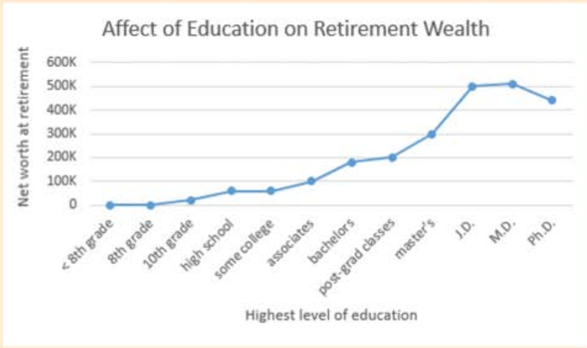
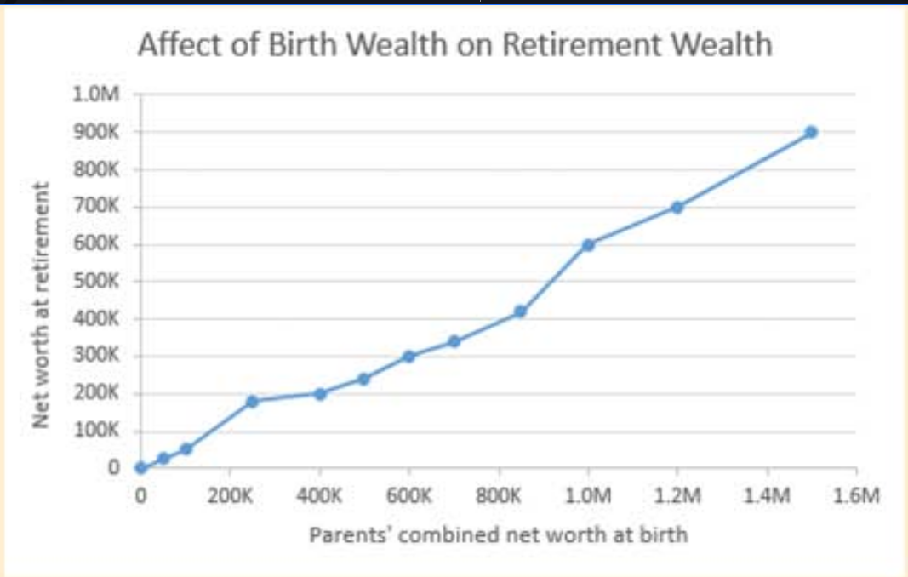

Maybe so, but work alone might not cut it. The following graphs[1] show
various paths to prosperity
Education
More advanced schooling helps. If you can avoid the crushing debt of student loans, all the better.
Try to find a major that you are good at and that is good to you.

Birthright
For accruing wealth, what's even better that education? Being born wealthy. In the graph below, note how the birthright high
enders are able to become more wealthy than the education high enders. So before being born, shop around.

1. Although the graphs' data is fabricated, the trends are real. See Lisa Keister's "Getting Rich: America's New Rich and How They Got That Way"
and Pew Charitable Trusts' "Economic Mobility Project."